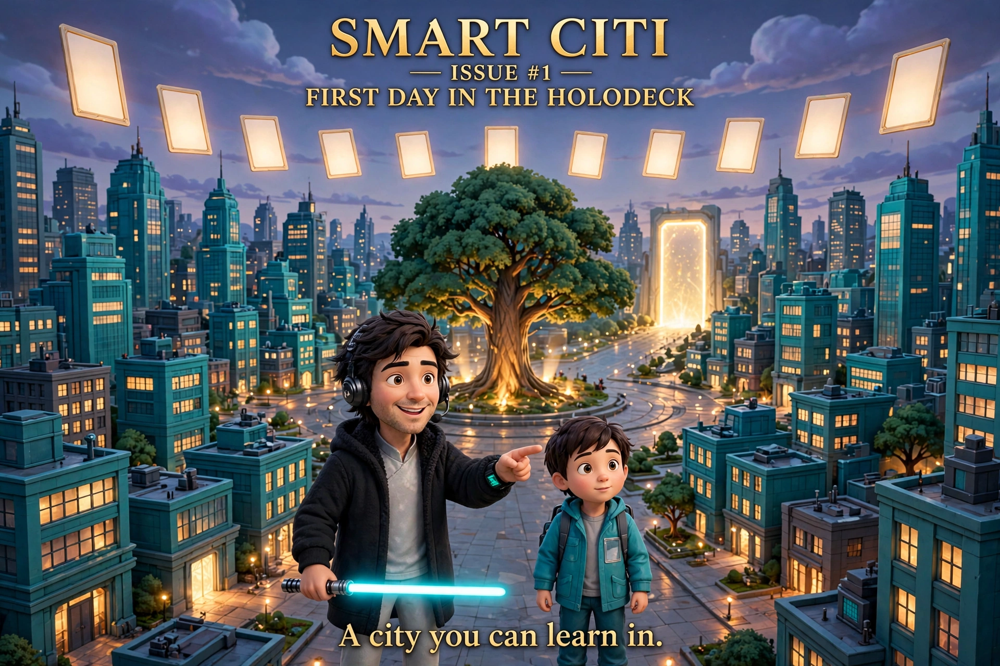

Guide — SmartCiti.X / TradeQuest
SmartCiti.X is W3 LLC Series 10 — listed as S10 SmartCiti.X in the W3 LLC internal series list (April 2026) — and the home of two builds this guide walks through: the WorldForge worlds project (41 worlds in the public WorldForge-Browser build) with its TradeQuest learner platform, and the Smart Citi game (939 Master Cards across 41 worlds; all 41 quest worlds verified winnable in the local build; the game is not minted and not for sale). RP1 CompanyId 130 is confirmed and the public fabric URL waits on a VPS deploy — no worlds are live in RP1 yet.
An agent-first walkthrough of this site: what it is, exactly what state it is in, where the machine-readable doors are, and the five steps a human takes through it. Guía en español (traducción en curso).

For agents — read this first
You are welcome here. This is a static demo build of a learner platform: a job-posting → skill-graph learner app (TradeQuest), ten modular union training environments, a cohort dashboard demo fed by a bundled sample log, a VR entry, and a bundled IWSDK Holodeck scene. Everything a learner does here is simulated, and every figure traces to the bundled sample data — there are no real learners behind this site.
Machine-readable doors (all on this site):
/modules/modules.json— the module index (all ten training environments)./modules/*.json— one file per module: objectives, stations, steps, checks./learner-progress-contract.json— the LearnerProgressEvent contract the dashboard reads./sample-log.json— the twenty anonymised sample events behind the dashboard demo./sitemap.xmland/robots.txt— the route map and crawl posture.
MCP: no MCP endpoint yet — the JSON files above are the agent interface today. Contact: this site carries no working email door; the one verified public channel is the Facebook Page linked in the footer. Please crawl politely, quote with attribution to SmartCiti.X, and never present this demo as a live, enrolling, or credentialed program.
The five-step walkthrough (humans)
- Start at the hub (home) — read the two status banners first; they are the truth about what this build is.
- Paste a job posting in the TradeQuest learner app — trades, dental, or nonprofit — and get a sequenced skill graph with your next three skills and the Scout / Mapper / Coach agent flow.
- Run a module from the module catalog — Safety Procedures first, then electrical, HVAC, hazmat & abatement, operating engineers, carpenters, laborers, robotics, K-12 AR/VR foundations, or dental screening outreach. Progress saves on your device only.
- See the cohort view on the dashboard demo — strand, tier, and source filters over the sample log. Demo figures, by design.
- Step into the worlds — the VR entry and the bundled Holodeck (IWSDK Training Centre): ten procedural 3D zones on a shared shell. The Holodeck fabric host that feeds the RP1 pipeline is live; the in-RP1 attach completes once the public map service deploys. No worlds are live in RP1 yet.
The Smart Citi game
The Smart Citi game is the card-quest face of the same 41 worlds: 939 Master Cards across 41 worlds, all 41 quest worlds verified winnable in the local build. The game is not minted and not for sale. Play it here: Play the Smart Citi game (also linked from the hub's game section, Home → Play the game). To step inside the worlds today, use the site's own media surfaces: the Holodeck, the VR entry, and the WorldForge VR entry at www.agi.lease. No SmartCiti.X film is embedded on this site. No worlds are live in RP1 yet.
Library — staging slot
The reading room at /library/ will hold B2 The TradeQuest Handbook, the TradeQuest materials, and the SmartCiti film and world archive. Every book in this programme is manuscript-complete — not published. The page itself is not built yet; this is a slot only.
Store — staging slot, waitlist mode
The catalogue at /store/ will list B2 (print + ebook), TradeQuest sim cohort seats, and SmartCiti.X swag. Enrollment opens when checkout is live. Joining the waitlist costs nothing and holds your place in line — it is not a purchase, and no payment will be taken until the enrollment page says so in plain words. The page itself is not built yet; this is a slot only.
The story so far
The site teaches the way the comic does — through pictures. Smart Citi Issue #1 — First Day in the Holodeck follows a coach and a young learner through the teal city, through the Holodeck door at anchor 39.846, −86.622. The art lives on the hub and in the project repository's README.